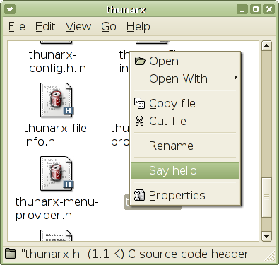

| Thunar Extensions Reference Manual | ||||
|---|---|---|---|---|
| Top | Description | Object Hierarchy | Prerequisites | ||||
ThunarxMenuProviderThunarxMenuProvider — The interface to extensions that provide additional menu items |
#include <thunarx/thunarx.h> struct ThunarxMenuProviderIface; ThunarxMenuProvider; GList * thunarx_menu_provider_get_file_actions (ThunarxMenuProvider *provider,GtkWidget *window,GList *files); GList * thunarx_menu_provider_get_folder_actions (ThunarxMenuProvider *provider,GtkWidget *window,ThunarxFileInfo *folder); GList * thunarx_menu_provider_get_dnd_actions (ThunarxMenuProvider *provider,GtkWidget *window,ThunarxFileInfo *folder,GList *files);
The ThunarxMenuProvider interface is implemented by extensions which provide additional menu items that should be displayed in the file or folder context menus for certain types of files.
Extensions that implement this interface should do its best to respond as
fast as possible to method invokations by the file manager. That said, when
the file manager calls the thunarx_menu_provider_get_file_actions() or the
thunarx_menu_provider_get_folder_actions() method, the implementation in the
extension should use only the thunarx_file_info_has_mime_type() and
thunarx_file_info_is_directory() methods to determine the actions that should
be added to the file manager's context menu. Don't perform any complicated I/O
to determine the action list, as that would block the whole file manager process.
The GtkActions returned from the
thunarx_menu_provider_get_file_actions() and thunarx_menu_provider_get_folder_actions()
methods must be namespaced with the module to avoid collision with internal file manager
actions and actions provided by other extensions. For example, the menu action provided
by the ThunarOpenTerminal extension should be
called ThunarOpenTerminal::open-terminal.
Example 5. Menu provider example
static void hello_menu_provider_init (ThunarxMenuProviderIface *iface);
static GList *hello_get_file_actions (ThunarxMenuProvider *provider,
GtkWidget *window,
GList *files);
THUNARX_DEFINE_TYPE_WITH_CODE (Hello, hello, G_TYPE_OBJECT,
THUNARX_IMPLEMENT_INTERFACE (THUNARX_TYPE_MENU_PROVIDER,
hello_menu_provider_init));
static void
hello_menu_provider_init (ThunarxMenuProviderIface *iface)
{
iface->get_file_actions = hello_get_file_actions;
}
static void
hello_activated (GtkWidget *window)
{
GtkWidget *dialog;
dialog = gtk_message_dialog_new (GTK_WINDOW (window),
GTK_DIALOG_MODAL
| GTK_DIALOG_DESTROY_WITH_PARENT,
GTK_MESSAGE_INFO,
GTK_BUTTONS_OK,
"Hello World!");
gtk_dialog_run (GTK_DIALOG (dialog));
gtk_widget_destroy (dialog);
}
static GList*
hello_get_file_actions (ThunarxMenuProvider *provider,
GtkWidget *window,
GList *files)
{
GtkAction *action;
GClosure *closure;
action = gtk_action_new ("Hello::say-hello", "Say hello", "Say hello", NULL);
closure = g_cclosure_new_object_swap (G_CALLBACK (hello_activated), G_OBJECT (window));
g_signal_connect_closure (G_OBJECT (action), "activate", closure, TRUE);
return g_list_append (NULL, action);
}
The above example will add an item to the file context menus as shown in the picture below:

struct ThunarxMenuProviderIface {
GList *(*get_file_actions) (ThunarxMenuProvider *provider,
GtkWidget *window,
GList *files);
GList *(*get_folder_actions) (ThunarxMenuProvider *provider,
GtkWidget *window,
ThunarxFileInfo *folder);
GList *(*get_dnd_actions) (ThunarxMenuProvider *provider,
GtkWidget *window,
ThunarxFileInfo *folder,
GList *files);
};
Interface with virtual methods implemented by extensions that provide additional menu items for the file manager's context menus.
Providers don't need to implement all of the virtual methods listed in the interface.
GList * thunarx_menu_provider_get_file_actions (ThunarxMenuProvider *provider,GtkWidget *window,GList *files);
Returns the list of GtkActions that provider has to offer for
files.
As a special note, this method automatically takes a reference on the
provider for every GtkAction object returned from the real implementation
of this method in provider. This is to make sure that the extension stays
in memory for atleast the time that the actions are used. If the extension
wants to stay in memory for a longer time, it'll need to take care of this
itself (e.g. by taking an additional reference on the provider itself,
that's released at a later time).
The caller is responsible to free the returned list of actions using something like this when no longer needed:
g_list_free_full (list, g_object_unref);
|
a ThunarxMenuProvider. |
|
the GtkWindow within which the actions will be used. |
|
the list of ThunarxFileInfos to which the actions will be applied. |
Returns : |
the list of GtkActions that provider has to offer
for files. |
GList * thunarx_menu_provider_get_folder_actions (ThunarxMenuProvider *provider,GtkWidget *window,ThunarxFileInfo *folder);
Returns the list of GtkActions that provider has to offer for
folder.
As a special note, this method automatically takes a reference on the
provider for every GtkAction object returned from the real implementation
of this method in provider. This is to make sure that the extension stays
in memory for atleast the time that the actions are used. If the extension
wants to stay in memory for a longer time, it'll need to take care of this
itself (e.g. by taking an additional reference on the provider itself,
that's released at a later time).
The caller is responsible to free the returned list of actions using something like this when no longer needed:
g_list_free_full (list, g_object_unref);
|
a ThunarxMenuProvider. |
|
the GtkWindow within which the actions will be used. |
|
the folder to which the actions should will be applied. |
Returns : |
the list of GtkActions that provider has to offer
for folder. |
GList * thunarx_menu_provider_get_dnd_actions (ThunarxMenuProvider *provider,GtkWidget *window,ThunarxFileInfo *folder,GList *files);
Returns the list of GtkActions that provider has to offer for
dropping the files into the folder. For example, the thunar-archive-plugin
provides Extract Here actions when dropping archive
files into a folder that is writable by the user.
As a special note, this method automatically takes a reference on the
provider for every GtkAction object returned from the real implementation
of this method in provider. This is to make sure that the extension stays
in memory for atleast the time that the actions are used. If the extension
wants to stay in memory for a longer time, it'll need to take care of this
itself (e.g. by taking an additional reference on the provider itself,
that's released at a later time).
The caller is responsible to free the returned list of actions using something like this when no longer needed:
g_list_free_full (list, g_object_unref);
|
a ThunarxMenuProvider. |
|
the GtkWindow within which the actions will be used. |
|
the folder into which the files are being dropped |
|
the list of ThunarxFileInfos for the files that are
being dropped to folder in window. |
Returns : |
the list of GtkActions that provider has to offer
for dropping files to folder. |
Since 0.4.1